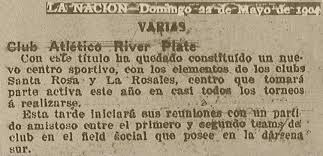
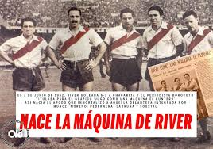
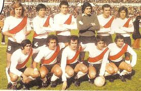
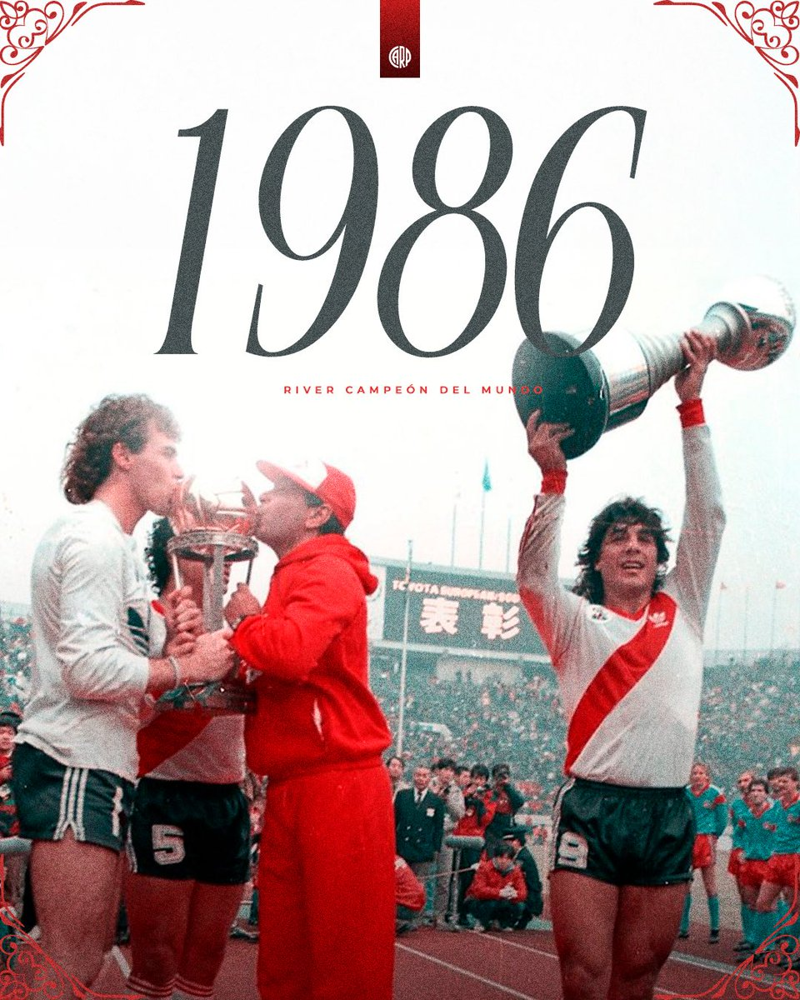
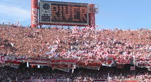

Eras de Gloria Absoluta
1901-1938: Génesis y la Identidad "Millonaria"
River nació entre los diques de La Boca pero su destino era la aristocracia del fútbol. Tras mudarse a Palermo y luego a Núñez, el club rompió el mercado en 1931 contratando a Bernabé Ferreyra por una cifra astronómica. Fue el nacimiento de un estilo: ganar, gustar y golear.

1941-1947: La Máquina (La Perfección Táctica)
Muñoz, Moreno, Pedernera, Labruna y Loustau. No eran solo jugadores, eran un engranaje poético. Redefinieron el fútbol mundial con la "permuta": los delanteros bajaban a armar juego y los volantes llegaban al área. Fue el equipo que inspiró a la Naranja Mecánica de Cruyff décadas después.

1975-1981: El Despertar del Gigante
Tras 18 años de sequía, Ángel Labruna volvió como DT para decir: "River es River". Ganó el Metro 75 y devolvió el orgullo. Fue la era de Fillol en el arco y la magia pura del Beto Alonso.

2014-2022: La Era Gallardo (La Eternidad)
Marcelo Gallardo no solo ganó títulos; reconstruyó la psiquis del hincha. Su equipo era un camaleón táctico: podía presionar como perros de presa o jugar con la delicadeza de un cirujano. Eliminó a Boca en 5 cruces directos consecutivos, culminando en la final de finales en el Bernabéu.

Mâs Monumental: El Coliseo
Con capacidad para 84.500 personas, es el estadio más grande de Sudamérica. La cercanía a la cancha (ahora a solo 12 metros) genera una presión única.

Tribuna Sívori
El corazón popular. Donde las banderas nunca bajan y el bombo marca el pulso del partido.
Tribuna San Martín
La elegancia y la historia. Donde se encuentran los palcos VIP y la salida de los equipos.
Tribuna Belgrano
La vista más espectacular. Desde aquí se aprecia el dibujo táctico y la inmensidad del campo híbrido.
Centenario
Un bastión de aliento constante que conecta con la historia rioplatense del club.
Vitrina de Gloria (54 Títulos Profesionales)
* Tocá cualquier año para desplegar la información técnica.
| Categoría | Años (Tocar para ver datos) |
|---|---|
| Ligas (37) | |
| Copas Nac. (7) | |
| Inter. (10) |
Altar de Próceres Millonarios
* Tocá sobre cualquier leyenda para invocar sus estadísticas sagradas.